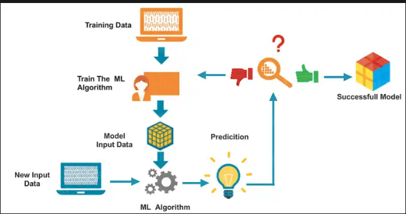

Introduction to Machine Learning¶
What is Machine Learning?¶
One definition: “Machine learning is the semi-automated extraction of knowledge from data”
Knowledge from data: Starts with a question that might be answerable using data
Automated extraction: A computer provides the insight
Semi-automated: Requires many smart decisions by a human
Machine Learning is a subset of artificial intelligence. It focuses of systems, thereby allowing them to learn and make predictions based on some experience which is data in case of machines.
Artificial Intelligence vs Machine Learning vs Deep Learning¶
Artificial Intelligence: A technique which enables machines to mimic a human behaviour.
Machine Learning: Subset of Artificial Intelligence(AI) which use statistical methods to enable machines to improve with experience.
Deep Learning: Subset of Machine Learning(ML) which make the computation of multi-layer neural network feasible.
How does Machine Learning Work?¶

Use Cases of Machine Learning¶
Voice assistants
Email filtering
Product recommendations
Personalized marketing
Process automation
Fraud detection
Health care
Finance
Use Cases of Machine Learning in Healthcare¶
Natural Language Processing (NLP) for Administrative Tasks
Patient Risk Identification
Accelerating Medical Research Insight
Visual Data Processing for Tumor Detection
Using Convolutional Neural Networks (CNNs) for Skin Cancer Diagnosis
Machine Learning Terminology¶
Types of Data¶
Quantitative: Numerical, measurable quantities in which arithmetic operations often make sense
Continuous: could take on any value within an interval,many possible values
Discrete:countable value, finite number of values.
Categorical: Classifies individuals or items into different groups
Ordinal: groups have an order or ranking
Nominal: groups are merely names, no ranking
Observation and Feature¶
Each row is an observation (also known as: sample, example, instance, record)
Each column is a feature (also known as: predictor, attribute, independent variable, input, regressor, covariate)
Independent and Dependent Variable¶
Independent Variable: A variable which value does not change by the effect of other variables and is used to manipulate the dependent variable. It often denoted as \(X\).
Dependent Variable: A variable whose value change when there is any manipulation in the values of independent variable. It is often denoted as \(Y\)
Example: Salary depends on year of experience
Salary: Dependent Variable
Year of experience: Independent Variable
Training and Test Dataset¶
Training Set: Here, you have the complete training dataset. You can extract features and train to fit a model and so on.
Validation Set: This is crucial to choose the right parameters for your estimator. We can divide the training set into a train set and validation set. Based on the validation test results, the model can be trained(for instance, changing parameters, classifiers). This will help us get the most optimized model.
Test Set: Testing Set: Here, once the model is obtained, you can predict using the model obtained on the training set.

Types of Machine Learning¶
Supervised Learning
Unsupervised Learning
Reinforcement Learning
Supervised Learning¶
The majority of practical machine learning uses supervised learning.
Supervised learning is where you have input variables (\(X\)) and an output variable (\(Y\)) and you use an algorithm to learn the mapping function from the input to the output. $\(Y = f(X)\)$
The goal is to approximate the mapping function so well that when you have new input data (X) that you can predict the output variables (Y) for that data.
It is called supervised learning because the process of an algorithm learning from the training dataset can be thought of as a teacher supervising the learning process. We know the correct answers, the algorithm iteratively makes predictions on the training data and is corrected by the teacher. Learning stops when the algorithm achieves an acceptable level of performance.
Supervised learning problems can be further grouped into regression and classification problems.
Classification: A classification problem is when the output variable is a category, such as “red” or “blue” or “disease” and “no disease”, “female” or “male”.
Regression: A regression problem is when the output variable is a real value, such as “dollars” or “weight”.

Some common types of problems built on top of classification and regression include recommendation and time series prediction respectively. Some popular examples of supervised machine learning algorithms are:
Linear regression for regression problems.
Random forest for classification and regression problems.
Support vector machines for classification problems.
How does Supervised Learning Work?¶

Example of Supervised Learning¶
Making predictions using data
Example: Is a given email “spam” or “ham”?
There is an outcome we are trying to predict

Unsupervised Learning¶
Unsupervised learning is where you only have input data (\(X\)) and no corresponding output variables.
The goal for unsupervised learning is to model the underlying structure or distribution in the data in order to learn more about the data.
These are called unsupervised learning because unlike supervised learning above there is no correct answers and there is no teacher. Algorithms are left to their own devises to discover and present the interesting structure in the data.
Unsupervised learning problems can be further grouped into clustering and association problems.
Clustering: A clustering problem is where you want to discover the inherent groupings in the data, such as grouping customers by purchasing behavior.
Association: An association rule learning problem is where you want to discover rules that describe large portions of your data, such as people that buy \(X\) also tend to buy \(Y\).
How does Unsupervised Learning Work?¶

Example of Unsupervised Learning¶
Extracting structure from data
Example: Segment grocery store shoppers into clusters that exhibit similar behaviors
There is no “right answer”

NOTE
Supervised: All data is labeled and the algorithms learn to predict the output from the input data.
Unsupervised: All data is unlabeled and the algorithms learn to inherent structure from the input data.